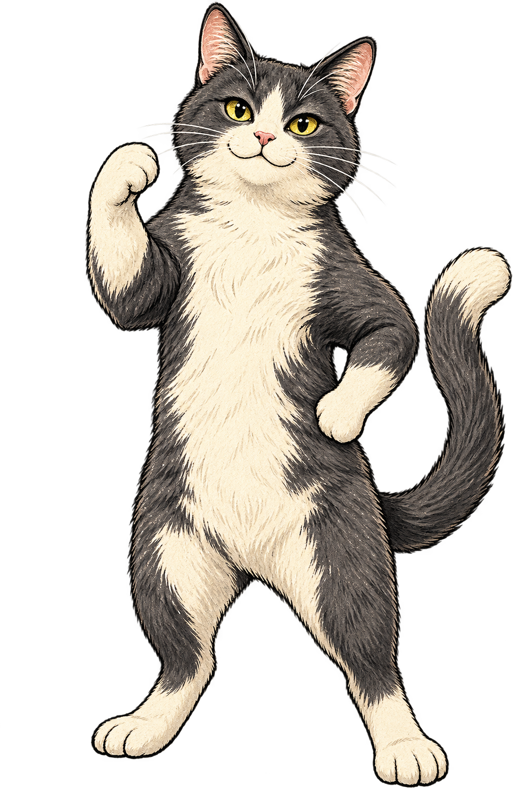

いまのあなたに、しっくりくるのは？
どれも少しずつ。あいだを選ぶ ＋
3つの気持ちを混ぜてみよう。どれかを動かすと、残りの割合も合わせて変わります。
正解も、不正解もありません。前の答えも変更できます。
YOUR LITTLE STEP
今日の小さな一歩
いま選んだ答えから、まちで試せること。
↗ こんなこと、してみよう
やってみるかは、あなたのペースで。
A LITTLE STEP INTO YOUR CITY
びびったり、お腹がすいたり、ひと休みしたり。
猫と歩く5つの問いから、
あなたに心地よい「まちとのつながり方」を探そう。
家猫100匹のデータを準備しています。
公開版を開くか、ページを読み込み直してください。
公開版を開く ↗5つの問い · 登録不要 · 自分のペースで

地域と答えの分布から、参加しやすい入口を考える。
WHY HOUSE CATS?
時間、安心、役割、人との距離。まちへの関わり方はひとつではありません。地域参加に関する研究と100匹の家猫データを、遊びながら考える入口にしました。
この作品の根拠を読む ↗いまのあなたに、しっくりくるのは？
3つの気持ちを混ぜてみよう。どれかを動かすと、残りの割合も合わせて変わります。
正解も、不正解もありません。前の答えも変更できます。
いま選んだ答えから、まちで試せること。
A CAT, AND A LITTLE POSSIBILITY
今日の選び方に近い座標の猫を、100匹のデータから探しました。
YOUR NEXT SMALL STEP
3つの答えの割合をそのまま図示します。能力や性格の点数ではありません。保留した問いは集計に含めません。
色と姿は作品の演出です。研究から毛色や目の色、性格を推定しているわけではありません。保留した問いには基本の姿を使います。
MANY CATS. MANY WAYS TO BELONG.
踏み出す猫も、様子を見る猫も。どの居場所にも、意味がある。
CURRENTLY SHARED
共有は任意。表示するのは物語上の地点だけです。この端末の記録と、共有された参加者を分けて表示します。
元CSVのX/Y座標をそのまま配置。点を押して、猫の背景と出典をたどれます。
X/Yは制作者による比較用の設計座標です。実際の住民分布や統計推定値ではありません。 同じ座標の点は、重なりを避けて表示を少しずらしています。
100 WAYS TO BE A HOUSE CAT
名前の向こうにある、参加の壁と小さな入口。
100匹は社会の現象や参加条件を考えるための創作類型です。人物を分類・診断するためのデータではありません。
その言葉に合う猫はいません。別の言葉で探してみてね。
PLAY, WITH A TRACEABLE FOUNDATION
どこまでが研究で、どこからが作品の工夫か。出典を開いて確かめられます。
地域への関心から、見学、短時間参加、協働へ。小さな選択を猫のリアクションと地図にし、地域参加の条件を話し合うためのシビックRPGです。
地域の担い手、関係の橋渡し、自己決定、共同管理。下の書誌から一次資料にアクセスできます。
5つの問い、選択肢、猫のリアクション、回答の座標、100匹への対応は制作者の解釈と設計です。
本アプリで地域参加が増えるか、継続するかは未検証です。参照研究が、このアプリや100類型を検証したわけではありません。
DATA & METHOD
元CSVの20項目を保持し、出典・URL・根拠要約・座標根拠・改善策・副作用を猫の詳細に表示します。書誌を照合できた2件は正式題名に補正して表示し、元CSVの記述も残しています。他の個別出典は未精査のものを含みます。
各選択肢に、場面と関係する元CSVの参照猫を設定し、その猫のX/Y座標を使用します。参照猫との対応づけは制作者の解釈です。回答した地点の平均座標を求め、その座標にユークリッド距離が最も近い猫を元CSVから表示します。同距離のときは番号の小さい猫を選びます。保留した地点は平均から除き、全保留なら中心座標（5,5）を使います。
この計算は作品内の対応づけです。心理尺度の得点や、本人の性格・健康・社会属性の推定ではありません。各回答の座標は、旅の記録で確認できます。
FOR UDC 2026
UDC公式募集要領の実用度・完成度・挑戦度を踏まえ、遊べる体験、たどれる出典、100匹の可視化を組み合わせています。これは出展に向けた試作で、受賞・公式認定・地域での実証実績を示すものではありません。
アーバンデータチャレンジ2026 公式募集要領 ↗